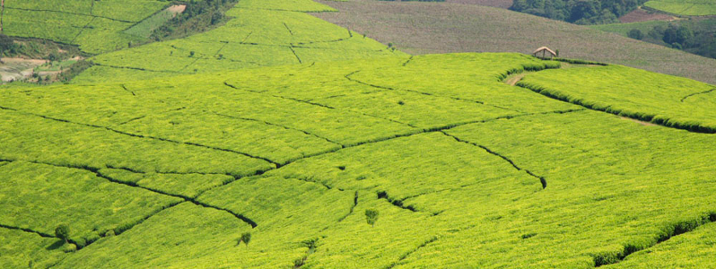
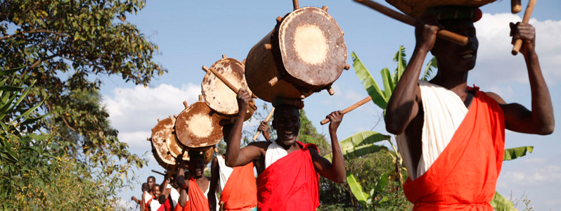
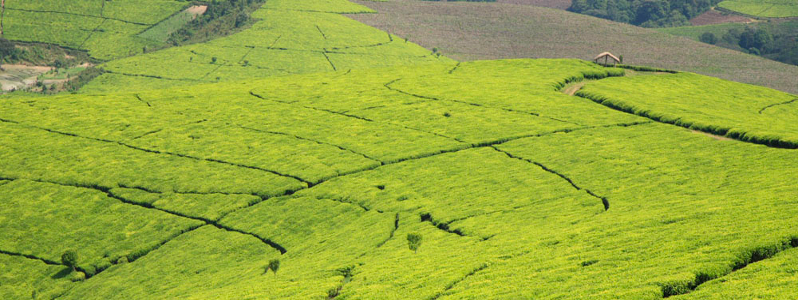
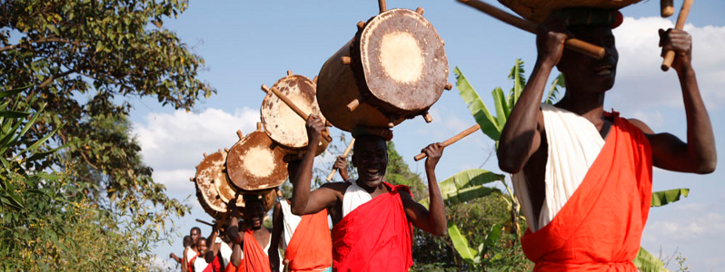

INGOMA Safaris offre des tours guidés de ces différentes merveilles du Burundi.

 



Lac Tanganyika
Remontant à plus de 12.000.000 d'années, le lac Tanganyika est le plus vieux lac des Rifts Valleys africains. Il est le deuxième lac en profondeur après le lac Baïkal en Russie. Long de 800 km environ et large de 50 km, il atteint par endroits des profondeurs de 1.435 mètres. Avec ses 18.800 km3, ce lac est le plus grand réservoir d'eau douce d'Afrique. Il draine un bassin versant d'environ 220.000 km2. Il est alimenté par de nombreux affluents dont les plus importants sont la Rusizi (qui draine le lac Kivu) et la Malagarazi qui draine les eaux de l'Ouest de la Tanzanie. Son exutoire est la rivière Lukuga.
Cet écosystème renferme une faune remarquable. En plus des espèces de poissons Cichlidés (plus de 250 espèces), il héberge des ensembles d'autres espèces non Cichlidés (plus de 145 espèces) et des invertébrés: dont plus de 60 espèces de gastéropodes, plus de 15 espèces de bivalves, plus de 69 espèces de copépodes, plus de 20 espèces de lèches, 84 ostracodes, 15 espèces de décapodes, plus de 9 espèces d'éponges.
Si les espèces proches de cichlidés du lac Tanganyika sont connus mondialement, trois espèces non cichlidés présentent un intérêt particulier: deux espèces de Clupéides (sardines) et Lates stappersi dominent la biomasse et sont la cible des pêcheurs industriels et artisanaux lacustres. Avec plus de 1.300 espèces de vertébrés et d'invertébrés, ce lac est un des écosystèmes d'eau douce les plus riches du monde. Parmi ces espèces, 500 sont endémiques.
Aussi, le lac Tanganyika a été pendant long temps une voie de commercialisation assez importante pour les pays riverains. En effet, au milieu du 19ème siècle, des produits (cotonnades, fils de laiton, perles) en provenance de l'Océan Indien passaient par cette voie lacustre. Et depuis, il joue toujours un rôle important sur le plan économique.
Des initiatives pour sa sauvegarde sont prises par les pays riverains, notamment : un Plan d'action stratégique pour la gestion durable du lac Tanganyika et une Convention sous régionale sur la protection du lac Tanganyika ratifiée par le Burundi le 22 juillet 2004.
Malgré les menaces (facteurs d'érosion, pollution, sédimentation et techniques de pêches) qui pèsent sur le lac Tanganyika, ce dernier garde son intégrité du fait de son aspect naturel caractérisé par une biodiversité extrêmement riche et complexe, avec plus de 1 500 espèces de plantes et d'animaux dont près de la moitié sont endémiques.
Le lac Tanganyika fait partie des lacs du Rift Valley Occidental de l'Afrique de l'Est. Ce lac se distingue par son aspect naturel caractérisé par une biodiversité extrêmement riche et complexe : 4 500 espèces de plantes et d'animaux dont près de la moitié sont endémiques à son écosystème, une source en eau vitale pour les populations riveraines du lac.
Réserve naturelle de la Rusizi
Créé en 1980, le parc national de la Rusizi s'étendait sur les provinces de Bubanza et Bujumbura Rural sur une superficie de 9.000 ha. Suite á l'aménagement du territoire, le site ne couvre aujourd'hui que 5 932 ha. En janvier 2000, le parc national de la Rusizi devient la réserve naturelle de la Rusizi. Il comprend 2 secteurs : le secteur Palmeraie et le secteur Delta.
Le Secteur Palmeraie
Cette réserve constitue une aire naturelle d'une valeur exceptionnelle du fait qu'on y rencontre une concentration de faux palmiers, Hyphaena benguellensis var ventricosa et 1 000 espèces végétales différentes. On en distingue quatre formations: les formations à Hyphaene benguellensis var.ventricosa occupant prés 1 200 ha, le long de la rivière Rusizi ; les bosquets xérophiles à Cadaba farinosa var. adenotricha et Commiphora madagascariensis; une forêt sclérophyle à Euphorbia dawei et une steppe à Bulbine abyssinica et Acacia hockii. Ces palmiers donnent des fruits sous forme de graines avec une carapace dont le noyau a la couleur de l'ivoire. Il est également appelé "ivoire végétal ".
Le secteur Delta
C'est un lieu de repos pour les grands groupes de Dandrocygnes (Dendrocygna viduata et Dendrocygna bicolor). Il présente d'autres atouts : lieu de reproduction d'espèces d'oiseaux migrateurs, lieu de prédilection pour la nidification des espèces limicoles comme Himantopus himantopus et Vanellus coronatus, oiseaux aquatiques. Le secteur Delta est également un site pilote de protection dans le cadre de la convention RAMSAR qui prône la protection des zones humides. La réserve naturelle de la Rusizi garde son intégrité. Le secteur Palmeraie revêt une importance particulière au niveau de la biodiversité végétale sauvage du fait que c'est la seule zone de cette aire protégée et du pays où l'on trouve une concentration de faux palmiers, Hyphaena benguellensis var ventricosa Ibikoko qui y est endémique, d'où la dénomination locale de Rukoko. La réserve naturelle de la Rusizi rappelle les autres parcs en bordure du lac Tanganyika tels que le Parc national de Nsumbu en Zambie et le Parc national de Gombe Stream en Tanzanie, mais il s'en distingue par la présence de faux palmiers, Hyphaena benguellensis var ventricosa.
Parc National de la Kibira
Créé le 12 décembre 1933 par l'ordonnance du Ruanda-Urundi nº83/bis/Agri, , le parc national de la Kibira était établi comme une réserve forestière de la Crête Congo-Nil. Comme pour toutes les aires protégées, le parc national de la Kibira a été institutionnalisé par le décret-loi nº1/6 du 03 mars 1980. Il s'étend de Bugarama au sud jusqu'à la frontière avec le Rwanda au Nord sur une longueur de plus ou moins 80 km et une largeur moyenne de 8 km. Sa superficie est d'environ 40.000 ha.
Il rejoint ensuite la forêt de Nyungwe au Rwanda voisin. Il s'étale sur les provinces de Muramvya, Kayanza, Cibitoke et Bubanza à une altitude variant entre 1 600 et 2 600 m. Le parc national de la Kibira est une forêt afro-montagnarde composée de trois zones forestières encore intactes et d'un écosystème très diversifié.
Sur une altitude comprise entre 1100 et 1600 m, on observe une forêt claire (Albizia, Entada abyssinica, Protea mandinsis) alors que, sur les sommets des crêtes du Mumirwa et de hautes collines du Mugamba, on observe une forêt ombrophile de montagnes et des galeries submontagnardes. Sur le versant est de la crête, la forêt fait partiellement place aux bambouseraies dominées par Arundinaria alpina. Le long de la crête se trouvent des vestiges de forêt afromontagnarde dominée par Prunus africana, ,Entandrophragma excelsum, Parinari excelca etc. Le sommet de la crête est couvert par une végétation xérophile à Philipia erica, Vaccinium, Agauria et Struthiola. Il s'agit d'une forêt composée de plusieurs étages liés notamment à l'altitude.
Cette aire protégée, d'une biodiversité très riche et variée, est un site naturel dans lequel on trouve des milliers d'espèces de faune et de flore très diversifiées et dont beaucoup d'entre elles sont endémiques. On y rencontre des insectes, des primates, des oiseaux, des reptiles, de grands mammif&egrveres etc.
Beaucoup de rivi&graveres prennent leurs sources dans ce parc. Celui-ci joue un rôle important au niveau des bassins des fleuves Congo et Nil, jusqu'à la Méditerranée et à l'Océan Atlantique. Il exerce une influence notoire dans la régulation hydrologique et la protection des sols contre l'érosion.
Dans ce parc national de la Kibira, on distingue également des plantes comestibles (fraises sauvages (mûres) : Myrianthus arboreus (amufe) et médicinales. Aux abords de la forêt il existe des eaux thermales dénommées amahoro, amashuha. C'est un lieu qui est fréquenté pour ses bienfaits thérapeutiques.
Le parc national de la Kibira est composé de trois zones forestières encore intactes d'écosystèmes très diversifiés. Inscrit dans la publication de l'Union Internationale pour la Conservation de la Nature (UICN) depuis 1996, il répond aux critères de classement des parcs nationaux comme toutes les aires protégées du pays. Toute activité de chasse, de pêche, de cueillette et d'exploitation minière y est interdite, le tourisme est réglementé avec un aménagement d'un circuit. Dans ces conditions, le parc national de la Kibira garde ses caractéristiques originelles. Les seules perturbations observées pendant la crise de 1993 étaient liées aux coupes de bois, aux défrichements, aux feux de forêts et à l'exploitation des mines et carrières.
L'autre particularité de la conservation du parc national de la Kibira est l'association de ses gestionnaires et la population riveraine dans la sensibilisation à un mode d'utilisation durable des ressources forestières.
Le parc national de la Kibira ressemble à la fôret de Nyungwe au Rwanda dont il est le prolongement. Mais les caractéristiques de ce parc le distinguent, entre autres, par la présence de différentes essences exotiques installées en blocs de plantation-tempon sur plus de 2000 ha et 49 ha pour enrichissement de la forêt.
Parc National de la Ruvubu
S'étendant sur quatre provinces et huit communes, le parc national de la Ruvubu a été créé en 1980 par le décret -loi Nº 1/6 du 3 mars 1980 sur avis d'une recommandation MAB (UNESCO). Il couvre une superficie de 50 800 ha et s'étend sur une longueur de 62 km dans son axe principal et sur une largeur variant entre 5 et 13 km. Il est situé dans la basse vallée de la rivière Ruvubu qui draine près d'un tiers de la superficie du Burundi et constitue l'affluent le plus méridional du bassin du Nil. Ce parc est une savane à 75% arborescente et arbustive, 15% boisée, 8% herbeuse et 2% galeries forestières.
Du point de vue géologique, les roches schisteuses entrecoupées de bandes de quartzites sont largement prédominantes et particulièrement de formation intrusive granitique.
L'analyse phytogéographique montre que le parc est principalement couvert de savanes arborescentes à Parinari curatellifollium, Pericopsis, Angoleusis et Hymenocardia acida. Son bas fonds est à Cyperus papyrus. Les forêts sont constituées de Macaranga spinosa, Anthocleista schweinfirthii ou Uapaca sp. La végétation compte au moins 300 espèces et certaines sont liées à l'altitude notamment Philippia benguellensis, Acacia abyssinica, Faurea rochetiana, Vernonia chtobocephala et plusieurs orchidées terrestres sur les hautes crêtes au dessus de 1.600 m.
Sa faune riche est confirmée par la présence de 44 espèces de mammifères appartenant à 18 familles entre autres les Bovideae et les Veverridea. Les grandes populations des mammifères concernent les espèces comme le Syncerus caffer, Kobus ellisiprymnos defessa et le Canis odustus. Parmi les grands prédateurs figurent le léopard (Panthera pardus), le lycaon (lycaon pictus), l'hyène tachetée (Crocuta crocuta).
Sur le plan ornithologique, une liste de 425 espèces existent dans le Parc National de la Ruvubu. La distribution des oiseaux est liée au type de végétation. Cette liste se compose d'une avifaune aquatique riche et typique pour la plupart des milieux aquatiques d'Afrique orientale et australe. L'avifaune de cette forêt naturelle est assez riche en divers éléments montagnards.
Une population de reptiles comprenant abondamment des crocodiles (Crocodilus niloticus) et des ophidiens à plus de 9 espèces est très riche dans ce parc. Les serpents sont aussi abondants.
On dénombre aussi 14 espèces de poissons dont le Barbus est le plus représenté. L'inventaire des amphibiens révèle la présence d'espèces comme le Ptychadena uzunguensis, Ptychadena loveridgei et le Bufo maculatus.
Le parc national de la Ruvubu constitue un site d'une valeur exceptionnelle de par sa grande faune et sa savane viable. Il est le seul site au Burundi oû l'on retrouve le buffle (cobe defassa), l'antilope rouanne, le cobe (Cobe redunca) et le colobe rouge. Il est aussi un site des espèces d'oiseaux dépendant :
- de grands mammifères; ces oiseaux sont notamment les grands vautours, certains rapaces et le pique-boeuf;
- des granivores et frugivores spécialis&eautes; il y a comme oiseau, le barbican à face rouge (Lybium rubrifaciées) et l'inséparable (Agapornis pullaria);
- des oiseaux inféodés aux galeries forestières de moyenne altitude comme le cossyphe à ailes grises (Cossypha polioptera) qui n'existe pas dans les massifs forestiers plus étendus;
- des oiseaux strictement inféodés aux marais de papyrus comme la fauvette jaune des marais, le gonolek des papyrus et la fauvette à ailes blanches;
- des espèces liées à la rivière comme le martin-pêcheur azuré (Alcedo quadribrachys), le martin chasseur à poitrine bleu (Halcyon malimbicus), la chouette pêcheuse de Pell (Scotopelia peli et la glaréole (Ephippiorhynchus senegalensis);
- des oiseaux liés aux plaines inondables, comme la grue couronnée (Balearica pavonina), la cigogne à cou laineux (Ciconia episcopa) et le jabiru d'Afrique (Ephippiorhynchus senegalensis).
Le parc national de la Ruvubu comprend des associations végétales variées. On y observe des communautés de marais, des eaux libres, des formations forestières et des savanes. La distribution naturelle des espàces floristiques et faunistiques à l'intérieur du parc crée une précieuse harmonie. C'est le seul parc oû l'on retrouve une grande diversité biologique écologiquement bien répartie.
Malgré les effets de braconnage et les feux de brousse durant la crise, le parc a gardé son authenticité et son intégrité.
Comme toutes les aires protégées, le parc national de la Ruvubu est géré par l'Institut National pour l'Environnement et la Conservation de la Nature (INECN) qui relève du Ministère de l'Aménagement du Territoire et de l'Environnement. Afin de préserver le site, des actions de protection et de sensibilisation sont menées. Aussi, les populations riveraines sont parties prenantes à ces actions notamment dans la réalisation des microprojets.
Le parc national de la Ruvubu peut être comparé au parc du littoral du Lac Victoria en Ouganda. Les savanes de la Ruvubu rappellent également celles du parc national de la Garamba (République Démocratique du Congo).
Gasumo, la source la plus méridionale du Nil
Long de 6 671 km, le fleuve Nil traverse 6 pays africains: le Burundi, le Rwanda, l'Ouganda, la Tanzanie, le Soudan et l'Egypte. C'est le plus long fleuve d'Afrique. Sa source est restée longtemps inconnue. Du point de vue de l'histoire, Ptolémée, géographe grec du 2ème siècle, pensait que cette source se trouvait dans de grandes montagnes neigeuses voisines de l'équateur et que les neiges en fondant alimentaient les lacs situés plus au nord, d'où sortaient deux cours d'eau dont la réunion formait le Nil. Jusqu'au 15ème siècle, les connaissances ne progressaient pas et l'hypothèse de Ptolémée était maintenue.
Il faudra attendre le 19egraveme siècle pour que les Anglais se lancent dans des expèditions difficiles afin d'éclaircir le mystère des sources du Nil. La Royal Geographical Society avait financé plusieurs expéditions à partir de Zanzibar. En 1858, après 6 mois d'exploration, Richard Burton et John Speke découvrirent le lac Tanganyika. Speke découvrit par la suite un autre lac, encore plus grand qu'il nomma lac Victoria, en l'honneur de la reine d'Angleterre et pensait ainsi avoir trouvé la source du Nil.
En 1860, partis pour rechercher Speke, Samuel Baker et sa femme Florence découvrirent une rivière reliant le lac Victoria au lac Albert et la considérèrent comme étant la source du Nil. Pendant ce temps, le missionnaire et explorateur David Livingstone prétendait que le lac Tanganyika était une des sources du Nil. Un peu moins d'un siècle plus tard, en 1934, l'explorateur Burckhart Waldecker découvrit, au Burundi, à Gasumo, la source la plus méridionale dans la commune Rutovu, en province Bururi.
C'est un filet d'eau qui sort du flanc nord du mont Gikizi à 3º54'47'' de latitude sud, dans la commune de Rutovu au Burundi. Il poursuit son parcours par les rivières Gasenyi, Kigira, affluents de la Ruvyironza. Cette dernière se jette à son tour dans la Ruvubu dont les eaux rejoignent la Nyabarongo pour former la Kagera, principale tributaire du lac Victoria. Les eaux du lac Victoria sortent par Jinja et constituent le Nil blanc. Les eaux provenant de l'Ethiopie arrivent à Karthoum par le Nil bleu. De cette ville, le Nil est constitué par un seul cours d'eau et traverse le Soudan et l'Egypte avant de se jeter dans la mer Méditerranée. Ce fleuve jouit de l'attention de la communauté internationale à travers les projets de l'Initiative du Bassin du Nil (IBN).
Le fleuve Nil peut être comparé au fleuve Niger. Celui-ci est le grand fleuve d'Afrique occidentale (4200 km). Tout comme le Nil, il sert pour l'irrigation.
Les chutes de la Karera et la faille de Nyakazu
Sur le massif de Nkoma situé dans la province de Rutana au sud-est du Burundi, se distinguent deux aspects naturels exceptionnels. D'une part, les chutes et la grotte de Karera et d'autre part la faille et la forêt de Nyakazu.
Les chutes et la grotte de Karera
Au sud-est du Burundi, dans la province de Rutana, commune de Mpinga-Kayove, sur la colline de Shanga, se trouvent les chutes et la grotte de Karera.
1. Les chutes
Ces chutes sont orientées du nord au Sud et s'étendent sur 142 ha. Elles sont subdivisées en six branches et réparties sur trois paliers.
Sur un premier niveau, se trouve une chute principale subdivisée en deux branches parallèles d'une longueur estimée à 80 m environ qui se déverse sur un bassin. Cette chute comprend plusieurs cascades de tailles différentes entrecoupées de deux plates-formes. A l'ouest de cette chute principale se trouve une autre cascade moins importante de 50 m environ. Les eaux de ces deux chutes convergent sur un deuxième palier pour former la troisième cascade qui se déverse sur la vallée. Ces eaux coulent à travers une galerie forestière entourée d'une savane à Parinari curatellifolia et Pericopsis angolensis et de grands arbres tel que le Newtonia buchananii.
C'est à partir de 1980 que les chutes et la grotte de Karera ont été instituées en aires protégées.
2. La grotte
Elle est située au niveau du point des chutes des premières cascades. Cette grotte est un lieu de culte où les populations de différentes régions viennent se recueillir.
Des infrastructures d'accueil et les accès sur les différents paliers ont été mis en place, notamment un emplacement de bancs pour observer les différentes chutes.
La faille de Nyakazu
La faille de Nyakazu s'ouvre sur la dépression du Kumoso. C'est une entaille dans le massif de Nkoma qui surplombe la plaine et se prolonge à la frontière avec la Tanzanie. Cette faille est d'origine tectonique récente et s'étend sur 600 ha. Selon les historiens, le premier Roi du Burundi serait apparu sur cette montagne vers le 15ème siècle, avant de progresser vers les hauteurs de Muramvya. Elle présente une structure exceptionnelle et on y trouve des vestiges historiques du fort allemand. En 1914, au début de la première guerre mondiale, Nyakazu était un poste militaire allemand construit pour contrôler la partie orientale du pays vers la Tanzanie. Quelques pierres encore visibles au sommet sud de la faille révèle l'existence de cette ancienne construction.Le plateau de Nkoma sur lequel ce "Boma" a été édifié aurait été, dit-on, "entaillé par les bottes des soldats allemands en fuite devant les forces Belges" d'oû l'appellation de "Faille des Allemands".
On observe également une chute saisonnière imposante d'une hauteur de plus de 100 m qui se déverse sur une vallée couverte d'une forêt constituée de différentes espèces notamment Entandrophragma excelsum. Autour de la faille, il existe une forêt claire à Brachystegia. C'est une zone de conservation des arbres de haute altitude qui jouit d'un microclimat particulier.
Les espèces de faune ne sont pas toutes inventoriées, mais on y observe des mammifères et des espèces ornithologiques. Les vestiges du fort allemand constituent un prestige historique, une structure impressionnante. Les chutes de la Karera à Shanga et la faille de Nyakazu gardent leur intégrité du fait de leur aspect naturel. Le site est entretenu par l'INECN et des voies d'accès et autres aménagements sont faits pour permettre la visite aisée du site.
Nous pouvons comparer les chutes de Karera qui ont une hauteur de 80 m à celles du Niagara aux USA et au Canada qui sont constituées de cataractes de 51 m de haut aux USA et de 49 m au Canada. Les deux ont respectivement 790 m et 305 m de front.
La faille de Nyakazu rappelle la grande faille de Midori produite pendant le séisme de 1891 au Japon, mais celle de Nyakazu s'impose par sa longueur de 112 m.
C'est un site à la fois historique et naturel, puisqu'il a été institué en aire protégée de 600 ha en 1980. Il constitue également un monument naturel, et toutes ces dispositions justifient la récente proposition pour son inscription dans le patrimoine mondial de l'UNESCO, en même temps que les chutes de Karera qui occupent le même massif de Nkoma plus à l'ouest.
Rwihinda, lac aux oiseaux
Au nord du Burundi, à la frontière avec le Rwanda, une série de huit lacs offre un spectacle naturel impressionnant : Cohoha, Gacamirindi, Gitamo, Kanzigiri, Mwungere, Narungazi, Rweru et Rwihinda, ces lacs font partie du bassin versant du fleuve Nil.
Le lac Rwihinda, appelé "lac aux oiseaux", fait partie de ces huit lacs. Il couvre une superficie de 425 ha et constitue le lieu de passage et d'hibernation pour les oiseaux migrateurs, soit environ 20 espèces. Ces oiseaux viennent d'Europe, arrivent sur le site en décembre et y retournent en avril.
Le lac comprend un îlot central appelé (Akagwa) et des îlots secondaires tourbeux flottants appelés (ibishinga), qui se déplacent dans le lac au gré du vent, constituant un habitat de prédilection, un lieu de ponte et de nidification pour certains oiseaux migrateurs. La richesse écologique, spécificité de ce lac, est constituée de plantes aquatiques notamment les nénuphars, le Potamogeton et des plantes de marais comme les papyrus.
On y dénombre aussi des reptiles comme Dasypeltis scabra, des batraciens et des poissons spécifiques.Au-delà du lac s'observe une savane composée de quelques arbres d'Acacia et de Combretum.
Malgré quelques menaces sur le lac Rwihinda notamment l'assèchement dû aux perturbations climatiques, le lac Rwihinda garde son intégrité du fait de son aspect naturel caractérisé par une végétation naturelle des bas fonds, une savane boisée composée d'arbres et de plantes flottantes. Cependant, ce lac subit des menaces liées à la pollution par des activités humaines, la disparition progressive des espàces d'arbres (acacias, combretum), d'oiseaux aquatiques (grues couronnées, flamengos rouges) et des poissons.
Le lac Rwihinda présente des caractéristiques particulières par rapport aux autres (se trouvant sur le territoire du Rwanda non loin des frontières avec le Burundi), bien qu'il soit localisé dans un même environnement naturel.
La résidence royale du Burundi (Gishora)
Le Burundi était organisé en monarchie depuis le 15ème siècle jusqu'à la proclamation de la République du Burundi le 28 novembre 1966.
A l'époque de cette monarchie, chaque roi (umwami) avait des capitales (Mbuye, Muramvya, Kiganda, Humure, Bukeye ...) disséminées dans le pays. Elles étaient plus concentrées dans la région de Muramvya. A la fin de chaque année, la cour royale organisait la fète des semailles du sorgho (Umuganuro) à laquelle participaient, entres autres, les ritualistes de Gishora.
Le domaine royal de Gishora a été fondé par le mwami Ntare Rugamba dans la première moitié du 19ème siècle après sa victoire contre le chef rebelle Ntibirangwa. Il se trouve sur le sommet de la colline Gishora dans la commune de Giheta à 7 km de la ville de Gitega.
1. La résidence royale ou ingoro
La spécificité de la résidence royale réside dans son architecture et sa technique de construction. Le cas de Gishora en est un exemple. En effet, résidence royale est constituée de trois cours inégales. Dans la résidence de Gishora, la première cour ou avant-cour, appelée intangaro, abrite le sanctuaire des tambours sacrés. La deuxième la plus grande, qui est la cour royale, comprend la résidence royale (ingoro). A l'époque, cette cour était généralement occupée par les grands chefs et l'arrière-cour (ikigo) comprend l'habitation des servantes, la case de culte (indaro ya Rugabo) et les greniers. Cette cour était uniquement réservée à la famille royale. Avant d'accéder à la résidence, il y avait une place publique d'accueil appelée "inama". Ce lieu servait de premier lieu d'attente à tous ceux qui se présentaient à la cour.
Le caractère exceptionnel de la résidence royale (ingoro) se manifeste par sa technique de construction. On trace la circonférence de la résidence grâce à deux unités de mesures liées appelées itambwe (une unité de mesure correspondant à un homme allongé à plat ventre sur le sol et bras levés). On plante ensuite un certain nombre de pieux et de perches (perches de Markhamia lutea, Spathodea nilotica). On creuse, tous les 30 à 40 cm, des trous de 50 à 60 cm de profondeur destinés à recevoir 45 à 60 pieux verticaux de 2 m de haut, entre lesquels on plante 120 à 200 longues perches (de 4 m environ) qui soutiendront le toit. Une fois que les pieux et les perches sont placés, ils sont liés par un premier tore horizontal doublé faisant tout le tour de la construction. Ce tore est composé d'une âme de roseaux gainée de papyrus finement tressés.
Dans le même temps, une autre équipe confectionne la partie interne du toit à l'intérieur de la construction. Cette sous-toiture constitue la partie la plus originale de cette habitation royale. On tresse la voûte comme un fond de panier renversé à l'aide d'un roseau de papyrus. Cette calotte est centrée sur une perche de la hauteur d'un homme; on lui ajoute progressivement par-dessous trois cerceaux concentriques fabriqués à l'extérieur assemblés tous les 20 ou 30 cm. Le tout est soulevé au fur et à mesure de son élargissement par des perches fourchues de plus en plus longues et consolidé par des tiges radiales. Lorsque la coupole avoisine le diam√®tre de la case, elle est dressée définitivement à la hauteur voulue à l'aide de 13 piliers terminés par des sabots de faîte chevillés finement décorés par pyrogravure. La partie inférieure est alors solidement reliée au sommet des pieux au niveau du tore principal.
C'est alors seulement qu'on replie les perches extérieures sur la coupole pour les lier entre elles à une hauteur de 3,40 m, déterminant l'ossature bombée de l'habitation royale. La couverture est réalisée avec soin par des spécialistes. Ils déroulent d'abord une bande de 3 à 4 cm d'épaisseur de javelles liées tous les 30 à 40 cm au tore de base. Ensuite ils recouvrent l'ensemble par la chaume à partir du sommet sans le lier, en jetant cinq cordelettes.
La dernière opération consiste à planter le toupet (igisenge), tressé avec du papyrus et fixé par une quille de bois au sommet de l'habitation. On édifie par la suite l'encadrement de la porte et son auvent. Le chambranle, constitué de quatre montants verticaux en bambou d'un mètre enfoncés dans le sol et entourés d'un fagot de fins bambous ficelés avec art par des cordelettes de papyrus, supporte un linteau cintré de même conception.
La paille épaisse de l'auvent, finement peignée et égalisée à la serpette, descend directement de la coupole et déborde légèrement sur les deux portes (porte d'entrée principale et celle opposée pour l'arrière-cour) très basses (80 cm) contribuant à la protection thermique. L'entrée principale est orientée vers le sud.
L'aménagement intérieur de cette résidence royale comprend la pièce d'accueil, le séjour avec une couronne originale du foyer qui comporte une poterie cylindrique d'un mètre de diamètre enfoncée dans le sol et un grand buffet, uruhimbi(plan dressé en bambous) et enfin la chambre du roi et de la reine séparée par une cloison de papyrus et de stipes de bananier percée par une petite fenêtre. Elle permettait au roi d'observer tout ce qui se passait dans le séjour.
Le tressage ingénieux des tores et sa fixation sur la charpente ainsi que le jeu des piliers constituent le décor exceptionnel de cette résidence royale de Gishora.
2. Le sanctuaire des tambours sacrés
Le sanctuaire des tambours sacrés est une habitation (inzu) ayant une pièce unique qui sert de palais de tambours (ingoro y'ingoma) à vocation rituelle. Il abrite les deux tambours sacrés (Ruciteme et Murimirwa) couchés sur un établi et orientés vers l'entrée ainsi que les autres tambours posés verticalement à même le sol. Les batimbo, ritualistes de la région et détenteurs de ce patrimoine, apportaient les tambours à la cour royale à l'occasion de la célébration de la fête annuelle des semailles (umuganuro).
Le sanctuaire est également construit sur le même principe que la résidence royale, mais présente moins de finesse. En effet, sa structure porteuse constituée d'une petite voûte tressée en vannerie (papyrus) est entourée d'un fin cerceau en spirale (sept à huit tours) dont l'âme de palmes est gainée de cordelettes en papyrus. Aussi, cinq cerceaux doubles ou triples concentriques assurent la liaison avec la voûte de la toiture dont l'armature est également un faisceau de palmes, mais où le gainage est remplacé par de simples ligatures de papyrus. La couverture de chaume est habillée par une sorte de natte de papyrus sec tressée avec des cordelettes du même végétal. Il n'existe qu'une seule porte d'entrée.
3. L'habitation des servantes
Cette habitation très simple est construite suivant le même principe que les précédentes et n'a aucun décor spécifique.
Toute la concession de la résidence de Gishora est protégée d'une part, par des arbres notamment les érythrines (arbres protecteurs), le ficus (utilisé pour la confection des vêtements) et les dragonniers et d'autre part, par une barrière naturelle à base de tiges de roseaux.
Ce site, placé sous la tutelle du Ministère de l'Education nationale et de la Culture, est géré par les ritualistes, les batimbo, appartenant au lignage des Banyagisaka. Ces familles ritualistes sont à la fois fabricants et spécialistes de la percussion des tambours. Ils battent le tambour régulièrement sur ce site, les week-ends notamment.
Le sommet de la colline de Gishora est le lieu emblématique dans lequel le roi (umwami) Ntare Rugamba séjournait en partie. Bien que sa résidence ait été reconstituée par les mêmes matériaux spécifiques à la construction de l'époque royale, elle a gardé son caractère originel. Cependant, la résidence de Gishora est menacée par la détérioration de la couverture en chaume.
Nous pouvons comparer les résidences royales du Burundi aux lieux de culte de Kasubi en Ouganda, de par leur similitude dans la technique de construction
Paysages naturels sacrés de Muramvya, de Mpotsa et de Nkiko-Mugamba
1. Itinéraire de l'intronisation des "bami" (rois)
Description du bien
Le successeur du roi (umwami au singulier, abami au pluriel) devait être intronisé suivant un rituel bien précis. En effet, après la mort du souverain, alors que les ritualistes Biru s'occupaient de la dépouille royale, le personnel de la cour devait organiser un deuil à Mwihangarizo où les chefs affluaient et restaient jusqu'à l'intronisation du nouveau roi. Le site de Mwihangarizo (zone Shombo, commune Muramvya) était le point de départ de l'itinéraire du cortège de l'intronisation du nouveau roi.
La fin du deuil se passait à l'abreuvoir aménagé dans le ruisseau de Gahororo de la colline Musongati, situé près de la confluence entre les rivières Mucece et Nyavyamo: le futur roi, le personnel de la cour, les princes, les chefs, les sous-chefs et le bétail descendaient de Mwihangarizo pour se rendre dans cette zone de confluence où se faisait le rituel d'intronisation.
Après cette levée de deuil, le nouveau souverain traversait la rivière Nyavyamo assis sur le taureau Semasaka, et était ainsi proclamé roi du Burundi. Le cortège remontait ensuite la colline Rubumba et le roi plantait au sommet de ce dernier un bosquet composé de végétaux comme l'érythrine (umurinzi), le ficus (umumanda), le dragonnier (igitongati). Les traces de tous ces symboles sont actuellement visibles. Le monarque se dirigeait dans une atmosphère de fête vers Kivyeyi en passant par la colline Nkondo. Le roi y passait 4 à 7 jours et s'unissait rituellement avec Mukakaryenda. Ce monarque recevait des cadeaux en bétail qu'il redistribuait à son tour et bénissait le feu (symbole de l'autorité royale et de la vie) et les semences (symbole de la fécondité et de la prospérité). Enfin, le cortège royal se dirigeait vers Mbuye où une nouvelle vestale (Mukakaryenda) lui était présentée.
L'intronisation d'un roi permettait ainsi au pays de revivre car, avec le décès d'une telle autorité, toutes les activités étaient arrêtées. Ce rituel ramenait la joie dans le pays.
Les traces de cet itinéraire sont encore visibles notamment à Mwihangarizo, à Rubumba et à Kivyeyi où l'on retrouve des ficus et des dracaena.
2. La capitale royale de Mbuye
Description du bien:
Après l'intronisation, le roi allait résider dans sa "capitale". En effet, chaque souverain du Burundi avait des "capitales" dans tout le royaume dont les traces sont actuellement matérialisées par des ibigabiro composées essentiellement de ficus (ibivumu), de dragonniers (ibitongati) et d'érythrines (imirinzi).
La capitale royale est une grande cour (ikirimba) ou rugo comprenant le palais royal, les demeures des princes et du personnel, les lieux de culte, les greniers et les espaces pour le bétail...
Cet espace royal comprenait trois cours principales: une vaste cour (intangaro) abritant le bétail royal (inyambo), une 2ème cour dénommée inyubakwa contenant le palais royal (nyamugari) et une 3ème cour (ikigo) jouant un rôle économique et religieux.
La capitale royale était aussi un centre d'attraction pour tout le royaume. On y rencontrait des délégations de chefs accompagnés de leurs sujets, des campements de guerriers, des visiteurs qui venaient demander des faveurs. Les principales capitales politiques se retrouvaient dans l'actuelle province de Muramvya notamment à Mbuye, à Muramvya, à Bukeye et à Kiganda. C'est dans ces capitales que le roi célébrait la fête annuelle des semailles (umuganuro). D'autres rugo royaux se trouvaient dans les autres régions du pays.
Le domaine royal de Mbuye a été la résidence royale des rois Ntare Rugamba, Mwezi Gisabo et Mutaga Mbikije. Il était géré par le clan des Bajiji. Le roi y rendait la justice avec la participation des chefs (abaganwa) et des notables (abashingantahe). Les activités du domaine étaient coordonnées par les gestionnaires des domaines (abishikira). Il comprenait un complexe d'habitations que l'on peut regrouper en deux ensembles: le groupe de Bikinga et le groupe de Muzenga. Le premier comprenait deux rugo du roi Ntare Rugamba, deux de Mwezi Gisabo et deux de Mutaga. Le second était composé des rugo de Mwezi Gisabo à Muzenga, de Mutaga Mbikije à Munazi et de Mwambutsa Bangiricenge à Ruvyagira.
Le domaine de Mbuye avait joué un r&ocicle important dans les rites d'intronisation, pour la fête nationale des semailles, dans la conservation des tambours royaux et l'éducation des jeunes princes et princesses. Au début du 20ème siècle, ce domaine perdit petit à petit son influence et la monarchie a cessé d'exister à la proclamation de la République du Burundi.
Actuellement, le domaine est entouré des collines Kiziba au sud, Buyaga à l'est, Iteka au nord, Mbuye à l'ouest.
3. La nécropole des reines mères à Mpotsa
Description du bien
Dans la société monarchique burundaise, la reine mère (umugabekazi) avait un pouvoir politique supérieur à celui des autres femmes car son autorité était indispensable pour la bonne organisation du royaume. Leur règne s'arrêtait lors de la majorité du jeune roi. La reine mère Ririkumutima, épouse du roi Mwezi Gisabo est très connue pour son action politique pendant la jeunesse du futur roi Mutaga Mbikije.
Lorsqu'une reine mère mourait, il était organisé une cérémonie funéraire. Les reines mères étaient conservées à Mpotsa dans l'actuelle commune de Rusaka, en province Mwaro. Ce site était gardé par des ritualistes Banyange, détenteurs attitrés du sanctuaire de Mpotsa.
La dépouille était acheminée vers le Bunyange par des porteurs désignés par la cour royale jusqu'à Budidiri sur la colline Rukiga, premier lieu de repos du cortège funéraire. Elle traversait la rivière Mucece, montait la colline Mahonda et arrivait à Rusaka sur la colline Bukwavu. Elle se dirigeait vers la colline Yakiriro où les porteurs remettaient la dépouille mortuaire aux Banyange et retournaient à Muramvya. Le corps de la reine passait la nuit à Yakiriro où un palais était construit et un bosquet sacré y était planté. Le lendemain, le cortège funéraire se dirigeait dans une atmosphère de fête vers Mpotsa et s'arrêtait à la rivière Akogabami pour des fins de purification. Les hommes de secret et une servante qui étaient venus de Muramvya lavaient le corps de la défunte avec un mélange de lait d'une vache blanche allaitant son premier veau, de bière de sorgho d'une seule couleur et de kaolin. Par la suite, la dépouille était conduite vers le sommet de Mpotsa où était construit un palais entouré de deux habitations de chefs Banyange et des cases provisoires destinées aux gardiens et à leurs aides.
Dans le site de Mpotsa, quatre reines mères y ont été conservées: les m√®res de Ntare II, de Mwezi II, Mutaga II et de Mwambutsa II. Ce site a gardé son caractère originel et sacré. Il rec&gravele des plantes médicinales assez variées. Les traces des enclos de ces reines mères sont matérialisées par des arbres tels que des dragonniers (ibitongati), des ficus (imimanda). D'autres essences végétales remarquables sont visibles dans cette forêt ombrophile : Albizia adianthifolia (imisebeyi), Myrianthus arboreus (amufe), Papyrus ( imihotora), Clausena anisata (umutana), Syzigium guineense (imigoti).
Cette forêt sacrée de Mpotsa est entourée par les collines Nyamigogo, Shana, Nkurunzi et Bunyange.La colline de Bunyange est aussi célèbre car on y trouve une source d'eau appréciée pour sa vertue thérapeutique.
4. Les nécropoles royales du Nkiko-Mugamba
Description du bien:
Les cérémonies funéraires des rois étaient également d'une grande envergure dans le pays. En effet, à la mort du roi, un rituel spécial était accompli. Pour la population, le roi ne mourait pas, il se donnait du miel (yiha ubuki). Cette triste nouvelle était portée à la connaissance des chefs et des Biru (ritualistes funéraires) et toutes les activités étaient arrêtées.
Les rois étaient conservés loin de leur capitale, dans la région de Nkiko Mugamba, au nord-ouest du Burundi. Un grand cortège de différentes personnalités accompagnait la dépouille. Les Biru construisaient un palais mortuaire à l'intérieur duquel était aménagée une claie sur laquelle ils déposaient le corps du souverain défunt.
Les tombeaux des quatre premiers rois (Ntare Rushatsi, Mwezi, Mutaga et Mwambutsa) sont localisés à Budandari dans la commune de Kabarore. Ceux des monarques, Ntare Rugamba, Mwezi Gisabo et Mutaga Mbikije, sont situés respectivement à Buruhukiro, à Remera et à Ramvya dans l'actuelle commune de Muruta en province de Kayanza.
Le tombeau de Ntare Rugamba se trouve à Buruhukiro. Il est situé dans une région tràs escarpée entre les collines Nyamigogo, Runyinya et Gatsinda. Ce bosquet est constitué d'une végétation exubérante. Son accès est très difficile à cause de son relief abrupt.
Le roi Mwezi, quant à lui, est conservé sur la colline Remera (sous-colline Kirambi en commune Muruta). Cette nécropole (inganzo) était gardée par les Bajiji (Misuzi et ses descendants). On y trouve des échantillons de ficus, des érythrines, des dragonniers.
La nécropole de Mutaga Mbikije se trouve à Ramvya. C'est un site situé au sommet d'une colline et qui reste bien protégé. Il était gardé par les Bajiji (Nsesanyi, son fils Nzorubara et ses petits-fils). On y aper√ßoit de vieilles essences végétales comme les ficus (imimanda), les dragonniers (ibitongati), Rhus vulgaris (imisagara)... On y trouve aussi des animaux tels des antilopes et des serpents.
Les bosquets des rois Ntare Rugamba, Mwezi Gisabo, Mutaga Mbikije, Mwambutsa Bangiricenge, le dernier roi Ntare Ndizeye sont encore visibles au sommet de la colline Rubumba. Ils sont en position rectiligne et identifiés chacun par une plaque. Ces mêmes espèces végétales se retrouvent dans les nécropoles des souverains et des reines mères.
Cet itinéraire de l'intronisation fait penser à la colline royale d'Ambohimanga de Madagascar qui figure déjà sur la Liste du patrimoine mondial. A Kiganda, tout le circuit de l'intronisation se passait sur trois collines qui s'enchaînent: Rubumba, Nkondo et Kivyeyi. A chaque étape, il y avait des rites qui étaient exécutés.
Le rugo traditionelle du Mugamba
Pays de collines, le Burundi compte 11 régions traditionnelles qui se distinguent les unes des autres sur le plan climatique et orographique. La région du Mugamba se situe sur la zone de partage des bassins hydrographiques du Nil et du Congo. Cette région se caractérise par un relief élevé (2 300 m en moyenne) et des températures annuelles comprises entre 14º et 17ºC.
Compte tenu des températures peu élevées de la région, la population a adopté des constructions en pisé qui lui permettent de se protéger contre ces basses températures et la forte humidité.
Ce rugo constitue une unité d'habitations (inzu) de tous les membres d'une même famille et est entourée d'une clôture (urugo) faite de bambous. Il comprend:
La maison principale, de forme ronde est entourée de deux grandes enceintes délimitant la cour de devant(urugo) et la cour arrière (ikigo). L'avant-cour (ikirugu) sert de parcage pour le bétail. Un foyer (igicaniro) au centre protège ces animaux domestiques contre les mouches. A côté, il y a un mât(icishinzo) contre lequel se frottent les vaches. Dans chaque enceinte, on y trouve des habitations de dimensions plus réduites.
Aussi, on y trouve l'habitation des adolescents, celle des membres de la famille la plus proche et celle des visiteurs. A côté se trouvent des greniers (ibigega) et un lieu pour le culte de Kiranga (intermédiaire entre l'Etre suprême et les hommes).
Ces habitations se distinguent par leur construction originale faite par les hommes. La dimension de la maison est déterminée par la taille d'une personne allongée par terre et qui étend son bras droit. Un piquet devant être utilisé pour le tra√ßage du diamètre de la maison est ensuite fixé au bout du doigt (le majeur). Cette dimension est fonction du rang social et des besoins du propriétaire.
L'armature de l'habitation est constituée d'un système de perches liées par un tore horizontal (ikoma) fait d'âmes de roseaux gainées et de cordes en bambou. A l'intérieur du cercle des perches, on tresse le plafond en forme de coupole constituée d'un boudin en spirale de vannerie (igisenge) qu'on soulève au fur et à mesure de son tressage. Ce plafond est dressé et maintenu à hauteur voulue (3 √† 5 mètres) grâce à des piliers (inkingi) terminés par des sabots (imyashi) décorés de motifs pyrogravés. Les perches extérieures sont alors repliées et liées. L'ensemble est recouvert de chaume coupée par des hommes dans les marais.
L'intérieur de la maison principale était divisé en cloisons faites de bambous qui délimitent, d'une part le vestibule où dorment les jeunes enfants et qui sert également d'étable pour les jeunes veaux, et d'autre part une alcôve où logeaient les parents. Un foyer (iziko) formé d'une coupelle de glaise et de bouse mélangées et trois pierres réfractaires est aménagé au milieu de la maison. Une claie (urusenge) destinée à recevoir les pots en argile et le bois de chauffage est construite au-dessus du foyer. Du côté droit de la maison, on construit un dressoir de forme ovale (uruhimbi) sur lequel on range des pots à lait (ivyakunze), des barattes (ibisabo) et différents paniers (ibiseke).
La décoration de la maison est faite par des femmes et des jeunes filles et consiste à enduire les cloisons de terre rouge et de kaolin et à tapisser le pavement d'une couche importante d'eragostris (ishinge) bien aménagés et recouverts de nattes.
De par son environnement naturel sur des collines, son contexte climatique ainsi que le savoir-faire local de ce type de construction a été sauvegardé par la population. Il a gardé ses caractéristiques originelles.
Ce type de maisons ressemble beaucoup aux constructions faites en Ethiopie autour du lac Wanchi. Ce type d'habitat est également présent au Rwanda.
Tambourinaires
Le tambour est une partie importante de l'héritage culturel burundais. Le célèbre Royal-Tambours du Burundi, qui s'est produit plus de quarante ans à travers le monde entier, est connu pour ses tambours traditionnels comme les "Amashāko", les "Ibishikiso"," l'Inkiránya" et "Kirotsa", le petit tambour. La troupe se produit toujours, sur l'ancien site royal de Gishōra, situé à quelques kilomètres (10 km précisément)au nord de Gitega, la seconde ville en importance au Burundi. La danse accompagne souvent les performances du tambour, musique populaire des célébrations et réunions de famille. Les "Abatīmbo", dont on jouie lors des cérémonies officielles et des rituels, et le rythme rapide de l'Abanyagasīmbo sont de célèbres danses burundaises. À noter également "l'Umwĩrōnge"(la flûte), "l'Ikēmbe", "l'Indonōngo", "l'Umudúri", "l'Inānga "(la cithare),etc... La réputation des tambourinaires a dépassé les limites du Burundi pour devenir internationale. En Afrique, ils symbolisent même la bonne orchestration du tambour.
Leur art est sacré. Il est aussi profane. C'est un lien mystique entre un pays, un peuple et un instrument. "Ingoma ", c'est à la fois le tambour, le départ (" Inkóko ni yó ngoma" : On part au chant du coq), le royaume et l'époque.
Les tambourinaires joue aussi lors des fêtes,Ils entrent en scène leur tambour sur la tête. Ils chantent en même temps qu'ils dansent. Disposés en arc de cercle autour du tambour central, "l'Inkiránya", ils attendent son signal. Alors, groupés en deux groupes, les "AbanyaMash&amacrko" et les "AbanyaBishikizo" battent leur rythme dans une harmonie surprenante. Le Tambourinaire soliste, celui qui bat "l'Inkiránya" ou le tambour central, éxècute une danse où se mêlent fantaisie et gravité. Danse guerrière, sa gestuelle est significative. Le soliste par moments mime le geste de se trancher la gorge. Cela traduit son attachement à son pays : "Que je meure si je trahis le Tambour! " Tous les Ritualistes Batimbo le suivent, parce qu'il est considéré comme leur roi et eux ses sujets.
Les tambourinaires ou le Ritualistes, Batimbo du Burundi, manient aussi l'humour, la satire et l'élégance. Le danseur soliste se transforme en un gentil clown marchant sur les mains, empruntant une démarche caricaturale et faisant des clins d'oeil au public. Les Tambourinaires ou les Ritualistes Batimbo du Burundi occupent "Inkiránya" ou jouent pour le public à tour de rôle. Ils peuvent jouer seul, à deux, à trois voire à quatre. Ils sont en quelque sorte de véritables athlètes qui courent, sautent, se tordent le cou et/ou les hanches, font des enjambements, etc. En ce moment, les Tambourinaires qui sont battent les Tambours sautent, chantent, marchent autour des Tambours qu'ils battent tout en suivant la cadence qu'exige la danse de l'artiste qui danse devant eux, leur roi. Aun fond, il s'appelle le roi, car, outre que ses sujets battent les Tambours en repondant à l'invitation du roi, celui-ci peut arrêter la danse s'il est certain que c'est ce qui est nécessaire de faire.
Circuits organisés ( INGOMA Safaris offre également des tours selon vos envies.)
5 jours / 4 nuits en Demi-pension: Lac Tanganyika - Source du Nil - Ville de Gitega & Tambourinaires sacrés
Incluant le transport, l'hébergement en demi-pension et les boissons non alcoolisées, le service de guide.
7 jours / 6 nuits en Demi-pension: Lac Tanganyika - Source du Nil - Ville de Gitega & Tambourinaires sacrés - Parc de la Rusizi - Bujumbura
Incluant le transport, l'hébergement en demi-pension et les boissons non alcoolisées, le service de guide.
10 jours / 9 nuits en Demi-pension: Bujumbura - Lac aux oiseaux - Lac Tanganyika - Source du Nil - Ville de Gitega & Tambourinaires sacrés - Parc de la Rusizi - Bujumbura
Incluant le transport, l'hébergement en demi-pension et les boissons non alcoolisées, le service de guide.